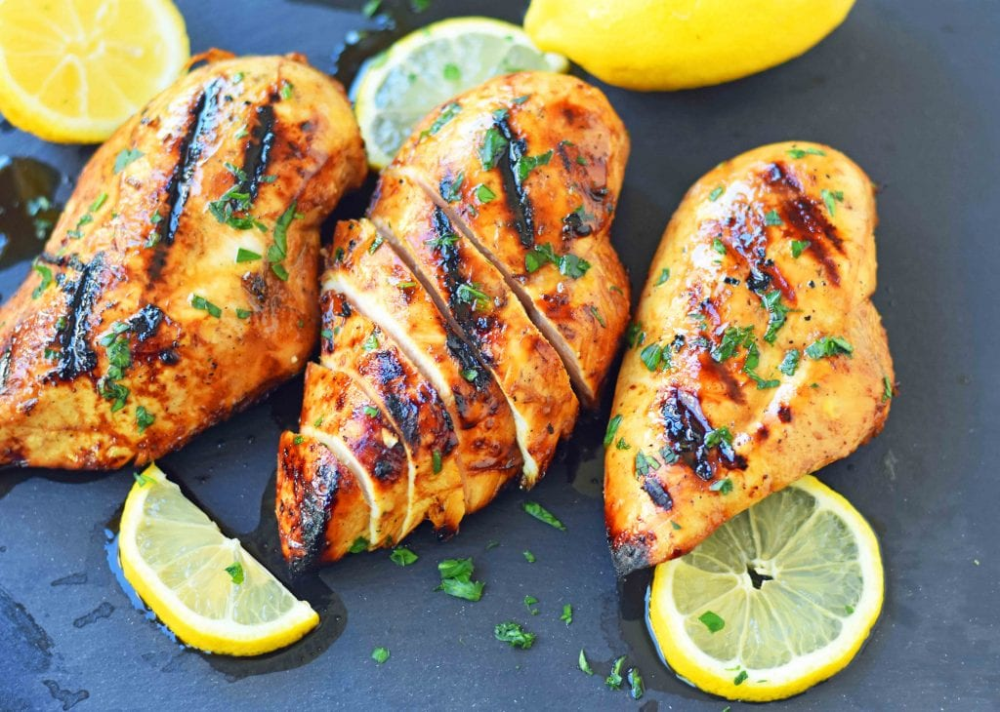

The best chicken marinade recipe

Description:
The Best Chicken Marinade Recipe makes chicken extra juicy and flavorful. This savory marinade makes grilled chicken mouthwatering!
Ingredients
- extra virgin Olive Oil
- freshly squeezed lemon juice
- balsamic vinegar
- soy sauce
- brown sugar
- Worcestershire sauce
- garlic
- salt and pepper
Instructions
- Pierce the chicken with a fork all over to ensure the marinade can seep into chicken to make it juicy
- The key is to let the chicken marinate for at least 30 minutes. An ideal marinating time is 4 - 5 hours
- To grill the chicken, set your grill at medium heat. Allow it to preheat before adding the chicken.
- To keep the chicken from sticking, brush a bit of oil on the grill.
- Cook for about 5 - 6 minutes per side, depending on the thickness of the chicken breast.
- The chicken needs to reach 165 degrees to ensure that it is completely cooked through.